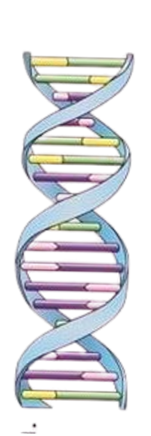
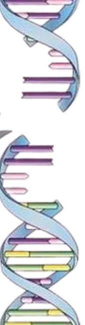
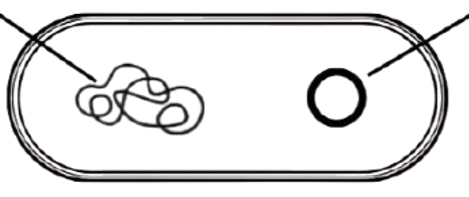
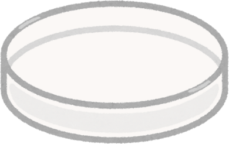

Instructions
- Click on the Scissor. Click again to cut the DNA.
- Click on Plus image.
- Click on test tube.
- Click on Recombinant DNA to transfer back into bacteria.
- Click on Gene library.
- CLick on Magnifying glass.
DNA of organism having gene of interest





